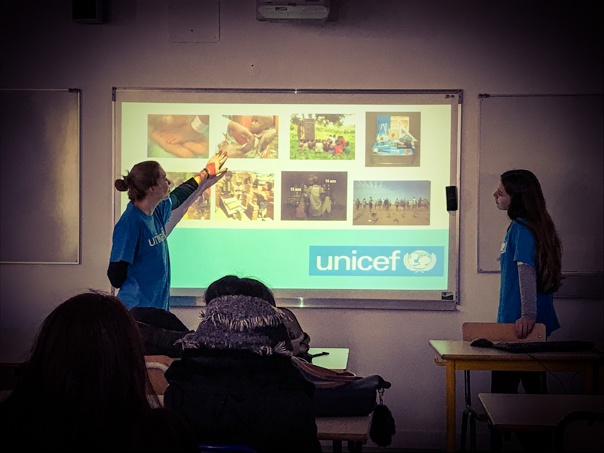
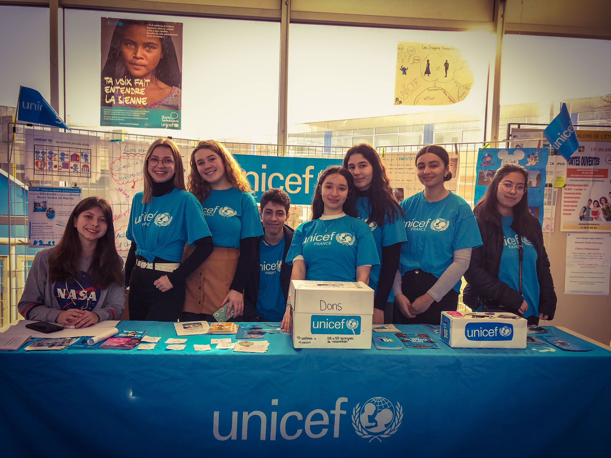

Qu'est-ce qu'un ambassadeur Unicef
Ce sont des personnes volontaires qui ont pour mission de portée les messages de soutenir les campagnes de collecte et de sensibiliser les différents publics à travers les médias
Que font les Ambassadeur Unicef au lycée ?
Il font des expositions avec des stand dans le hall, des interventions, de la sensibilisation dans les classes pour les élèves et de collecté de l'argent pour l'association.
 